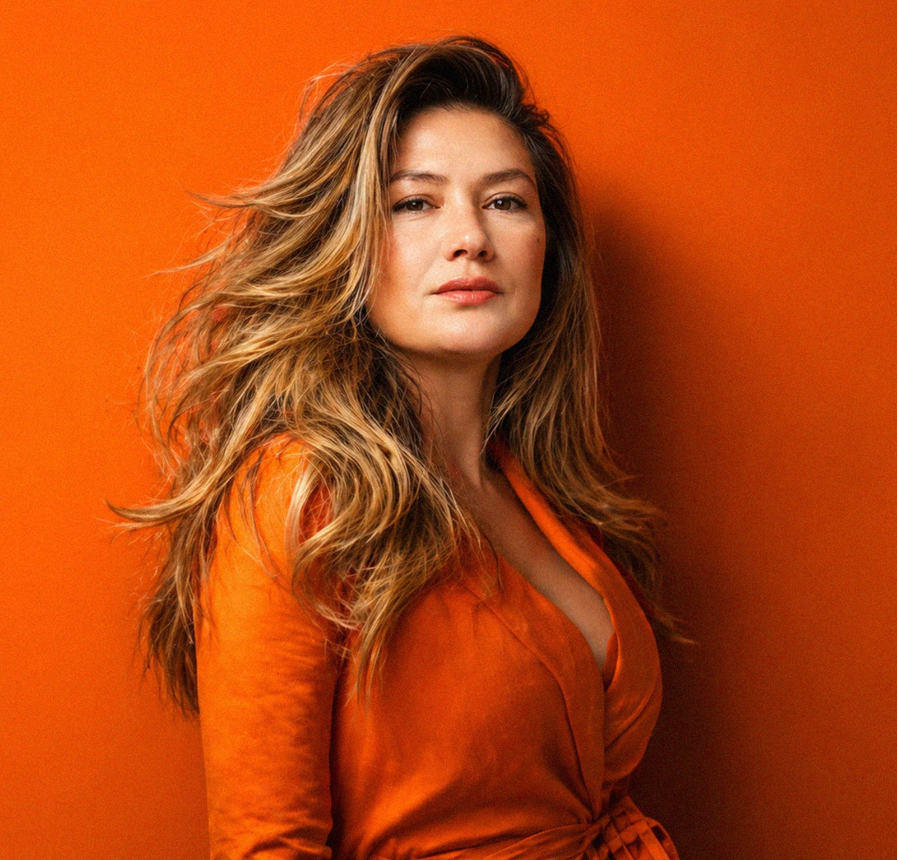

Hello, I'm Anna! 👋 Art Director based in Prague, Czechia.
I turn complex ideas into clear visual systems for

Retail · Transport · Culture · Tourism · Pharma tech · Education
Expertise
Brand & Art Direction
Identity, key visuals, campaigns.
Websites
Structure, UI and responsive layouts.
Motion & AI video
Short films and reels for brands.
Work
Motion & AI video
→Packaging & retail
Billa and Lindt.
Testimonials
Looking for an art director in Prague? Let's talk.
I reply within a day.
- Emailanna.filya.hlozkova@gmail.com
- LinkedInAnna Hložková
- Telegram@Anna_Filya
- Instagram@anna.filya.hlozkova
- Phone+420 777 350 123 · Praha